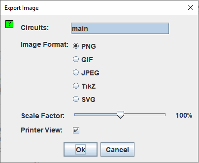

ייצוא תמונות
כאשר אתה בוחר ב| ייצא תמונה... |, Logisim מציגה תיבת דו-שיח עם ארבעה אפשרויות.

הגדרת ייצוא
- מעגלים: רשימה שבה אתה יכול לבחור מעגל אחד או יותר שיש לייצא לקובצי תמונה. (מעגלים ריקים אינם מוצגים כאפשרויות).
- פורמט תמונה: אתה יכול ליצור קובצי PNG, GIF, JPEG, TikZ ו-SVG. הייתי ממליץ על קבצי PNG: ה-GIF הפורמט מיושן למדי, ופורמט JPEG יכניס חפצים לתמונה, כפי שפורמט JPEG הוא באמת מיועד לתמונות צילום.
- גורם קנה מידה:תוכל לשנות את קנה המידה של התמונות כשהן מושלכות לקובצי תמונה באמצעות המחוון הזה.
- תצוגת מדפסת:סגנון התמונה שהופקה עם המידע הסטטיסטי או רק עם הסכימה.

לאחר לחיצה על אישור, Logisim תציג תיבת דו-שיח לבחירת קבצים. אם בחרת מעגל אחד, בחר את הקובץ שלתוכו יש למקם את התמונה. אם בחרת מספר מעגלים, בחר ספרייה שבה יש למקם את הקבצים; Logisim תן שם לתמונות על סמך שמות המעגלים (main.png, לדוגמה).